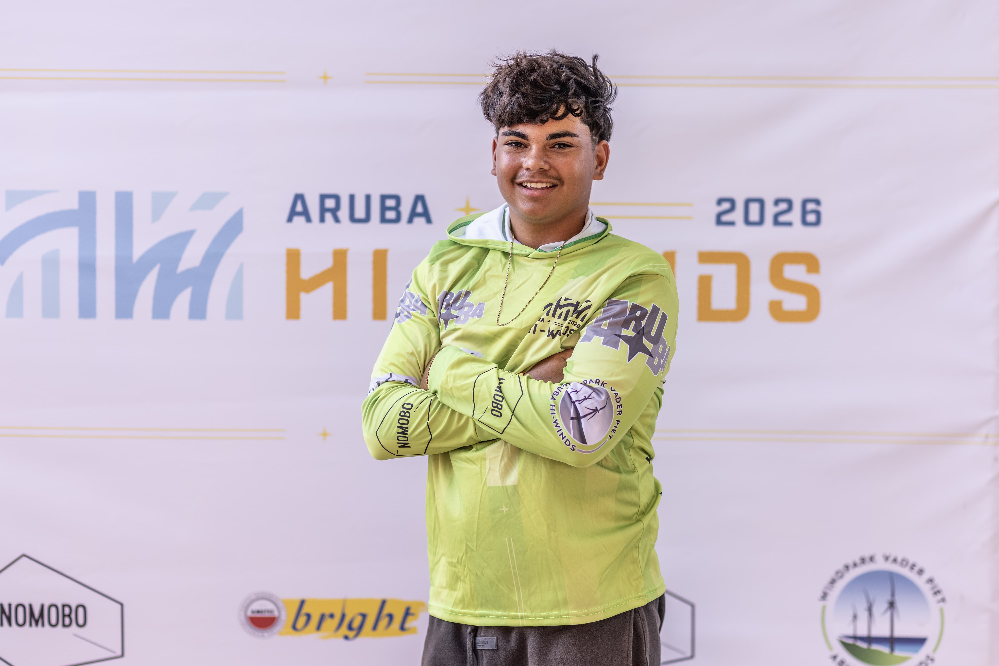

Who I am
Built by
the wind
Arxon Gomperts is a professional windsurfer specialising in fin slalom racing. Driven by a relentless passion for speed and technical mastery, he has been pushing his limits on international waters since a young age.
Powering a fully loaded slalom sail through tactical buoy racing and blazing downwind runs, Arxon brings raw commitment, precision, and a hunger to reach the top of the sport.
He trains out of Lac Bay in Bonaire and races sail number NB-2011 on the international youth circuit, travelling from the Caribbean to Europe across the season.
Become a Partner →
- Based in Bonaire, Caribbean
- Trains at Lac Bay
- Sail number NB-2011
- Discipline Fin slalom